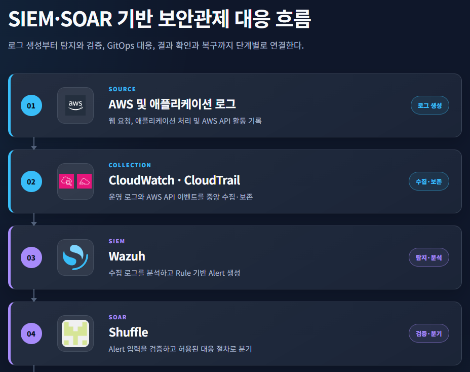

0. 로그 수집·SIEM 탐지·SOAR 대응의 3단계 보안관제 구조
1. 문서 목적
본 프로젝트의 보안관제 체계는 로그 수집, SIEM 탐지, SOAR 대응의 세 단계로 구성된다.
각 단계는 다음 질문에 답한다.
① 어떤 요청과 AWS 활동이 발생했는가?
② 수집된 로그에서 조사할 보안 이벤트가 발견되었는가?
③ 해당 경보를 안전하게 대응 절차로 연결할 수 있는가?
이를 통해 단순한 로그 저장을 넘어 탐지, 검증, 대응, 복구까지 연결되는 관제 흐름을 구성하였다.
2. 전체 관제 흐름
{kind=link}



Wazuh 연계 보안 로그
→ CloudWatch Logs·S3 및 DVWA Push 경로에서 수집
→ Wazuh 분석 및 Alert 생성
→ Shuffle 입력 검증
→ GitHub Actions 대응 실행
→ Argo CD 배포
→ 결과 확인 및 복구1단계는 WAF, CloudFront, ALB, VPC, 애플리케이션 및 CloudTrail에서 발생하여 CloudWatch Logs와 S3에 저장된 보안 Telemetry를 수집한다.
2단계는 Wazuh가 수집된 이벤트를 규칙에 따라 분석하고 조사 대상 Alert를 생성한다.
3단계는 Shuffle이 Alert의 입력 계약과 허용된 대응 범위를 검증하고, 허용된 경보만 GitHub Actions Workflow로 전달한다. 이후 Argo CD가 Git 변경을 감지하여 EKS에 반영한다.
GitHub Actions는 Shuffle이 호출하는 대응 실행 채널이고, Argo CD는 Git 변경을 감지하여 EKS에 반영하는 GitOps 배포 채널에 해당한다.
| 단계 | 주요 구성 | 역할 | 결과 |
|---|---|---|---|
| 보안 Telemetry 수집 | WAF, CloudFront, ALB, VPC, 애플리케이션 및 CloudTrail 로그 | 요청, 명령 실행 및 AWS API 활동 기록 | 원본 로그 |
| SIEM 탐지 | Wazuh | 로그 분석 및 Rule 기반 이상 징후 식별 | Wazuh Alert |
| SOAR 검증 | Shuffle | Rule ID, Schema, 이벤트 식별자 및 대응 대상 검증 | 승인 또는 거부 |
| 대응 실행 | GitHub Actions | 고정된 DVWA 설정만 변경 | Git Commit·Artifact |
| 배포·복구 | Argo CD, EKS | GitOps 변경 배포 및 정상 상태 확인 | Synced·Healthy |
- WAF, CloudFront, ALB 및 VPC Flow Log는 보안 Telemetry Source이며, Athena와 Grafana는 저장된 로그를 분석·시각화하는 보조 채널로 사용한다.
- GitHub Actions는 Shuffle이 호출하는 대응 실행 채널이고, Argo CD는 Git 변경을 감지하여 EKS에 반영하는 GitOps 배포 채널에 해당한다.
3. 보안 Telemetry 수집
첫 단계에서는 외부 요청, 애플리케이션 처리, AWS API 호출 및 객체 접근 기록을 수집한다.
· WAF 로그는 웹 요청과 Rule 적용 결과를 기록한다.
· CloudFront와 ALB 로그는 외부 요청이 애플리케이션까지 전달된 경로를 확인한다.
· 현재 프로젝트의 VPC Flow Log는 네트워크 연결 중 REJECT 결과를 기록한다.
· 애플리케이션 감사 로그는 DVWA 내부의 명령 실행과 IMDS 접근 징후를 제공한다.
· CloudTrail은 IAM Role을 사용한 AWS API 호출과 S3 객체 접근을 기록한다.
CloudWatch Logs는 비교적 빠른 검색과 이벤트 확인에 사용한다. S3, Athena 및 Grafana는 장기 보관된 로그의 검색, 집계 및 시각화에 활용한다.
- 주요 보안 로그 Source와 수집 목적
| 로그 Source | 주요 수집 내용 | 확인 목적 |
|---|---|---|
| WAF | 요청 URI, Client IP, 적용 Rule, COUNT·BLOCK 결과 | 웹 공격 패턴과 처리 결과 확인 |
| CloudFront | 외부 요청 경로, Edge 정보, 상태 코드 | 외부 요청의 최초 진입 지점 확인 |
| ALB | Origin 전달 여부, 응답 상태, 처리 시간 | 요청의 애플리케이션 도달 여부 확인 |
| VPC Flow Log | Source, Destination, Port, REJECT | 네트워크 연결 및 차단 흐름 확인 |
| 애플리케이션 감사 로그 | Pod, 요청 경로, 명령 실행, IMDS 접근 징후 | Workload 내부 처리 확인 |
| CloudTrail | IAM Role, AWS API, S3 객체 접근 결과 | AWS 권한 사용과 객체 접근 확인 |
- 로그 저장·검색·분석 구성과 역할
| 저장·분석 구성 | 활용 목적 |
|---|---|
| CloudWatch Logs | 최근 이벤트 검색 및 실시간에 가까운 로그 확인 |
| S3 | 원본 로그 장기 보관 |
| Athena | S3 로그에 대한 SQL 기반 분석 |
| Grafana | 로그 집계 결과와 시간대별 흐름 시각화 |
| Wazuh | 로그 중앙 수집, Rule 분석 및 Alert 생성 |
4. Wazuh SIEM 탐지
Wazuh는 수집된 애플리케이션 로그와 CloudTrail 이벤트를 Rule에 따라 분석한다.
| Rule | 입력 로그 | 탐지 조건 | 보안적 의미 |
|---|---|---|---|
100110 | IMDS 자격증명 응답이 반환된 DVWA 명령 실행 감사 이벤트 | IMDS 자격증명 경로 대상 명령이 응답을 반환 | 추가 조사가 필요한 조기 경보 |
100111 | CloudTrail S3 Data Event | 승인된 Role과 객체에 대한 GetObject 성공 및 실제 바이트 반환 | S3 객체 접근을 확인하는 고신뢰 경보 |
관제자는 서로 독립된 Rule 100110과 Rule 100111 Alert를 시간과 사건 정보를 기준으로 다음 순서로 조사한다.
| 탐지 단계 | 확인 내용 | 판단 |
|---|---|---|
| Suspect | Rule 100110 IMDS 접근 징후 | 자격증명 접근 가능성이 있으므로 조사 시작 |
| Confirm | Rule 100111 S3 객체 반환 성공 | 검증용 객체 접근 사실 확인 |
| Correlation | 시간, 실행 주체, IAM Role 및 대상 객체 비교 | 관제자가 동일 사건으로 분석할 근거 확보 |
| Response Candidate | 검증된 Alert를 Shuffle로 전달 | 제한된 대응 절차의 입력으로 사용 |
Rule 검증에는 Positive 입력과 Negative 입력을 함께 사용하였다.
| 검증 대상 | Positive | Negative | 확인 결과 |
|---|---|---|---|
Rule 100110 | 1건 | 8건 | 허용 조건만 Rule 100110으로 탐지 |
Rule 100111 | 1건 | 15건 | 계정·Role·Bucket·Object·성공 조건이 일치한 이벤트만 탐지 |
Rule 100110만으로 자격증명 탈취나 S3 접근을 확정하지 않는다. 실제 객체 접근은 Rule 100111과 CloudTrail 원본 기록을 통해 추가 확인한다.
5. Shuffle SOAR 검증과 대응
Shuffle은 Wazuh Alert를 수신한 뒤 즉시 대응을 실행하지 않는다. 먼저 Rule ID, 이벤트 식별자, 입력 Schema 및 대응 대상이 사전에 정의된 조건과 일치하는지 확인한다.
Wazuh Alert 수신
→ Rule별 입력 계약 확인
→ 이벤트 식별자 검증
→ 허용된 대상 확인
→ 고정 GitHub Workflow 전달- Shuffle은 Wazuh에서 전달된 Alert를 바로 실행하지 않는다. 먼저 Alert의 Rule ID와 입력 형식이 사전에 정의된 조건에 맞는지 확인하고, 검증에 성공한 경우에만 해당 Rule에 연결된 대응을 실행한다.
- Rule
100110이 전달되면 대응 대상을 임의로 선택하지 않고, 미리 지정된 DVWA Workload 대응 절차를 호출한다. 이는 IMDS 접근 징후가 발생한 Workload로부터 추가적인 공격이 확산되는 것을 제한하기 위한 조치이다.
- Rule
100111이 전달되면 검증된 S3 객체 접근 사건에 대한 대응으로, 고정된 GitHub Workflow를 호출한다. 해당 Workflow는 DVWA 보안 수준을low에서impossible로 변경하고, Argo CD를 통해 변경사항을 배포한다.
- 반대로 허용되지 않은 Rule ID, 잘못된 입력 형식 또는 변조된 값이 전달되면 Shuffle은 요청을
RESPONSE_FAILED상태로 종료한다. 이 경우 GitHub Workflow가 호출되지 않으므로 인프라나 애플리케이션 설정도 변경되지 않는다.
| 입력 조건 | Shuffle 판단 | 연결되는 대응 | 실행 결과 |
|---|---|---|---|
Rule 100110 검증 성공 | 대응 허용 | 고정된 DVWA Workload 대응 절차 | 지정된 Workload 대응 실행 |
Rule 100111 검증 성공 | 대응 허용 | 고정된 GitHub Harden Workflow | low → impossible 변경 |
| 허용되지 않은 Rule ID | 입력 거부 | 없음 | RESPONSE_FAILED |
| Schema 또는 필수 값 불일치 | 입력 거부 | 없음 | RESPONSE_FAILED |
| 변조되거나 허용되지 않은 대상 | 입력 거부 | 없음 | 후속 Workflow 미실행 |
| 정상 입력 전달 완료 | 대응 전달 성공 | Rule별 고정 Workflow | DISPATCHED 및 Run ID 반환 |
6. GitOps 변경과 복구
Shuffle이 승인한 대응은 GitHub Actions를 통해 GitOps 저장소의 지정된 설정만 변경한다.
Rule 100111 대응에서는 DVWA Helm 설정의 보안 수준을 low에서 impossible로 변경한다. 변경 결과는 Commit SHA와 Workflow Artifact로 기록된다.
Argo CD는 저장소의 새 Revision을 감지하고 EKS에 배포한다. 배포 완료 여부는 Synced, Healthy, Revision 및 실제 Deployment 환경변수를 통해 확인한다.
Rule 100111
→ Shuffle 검증
→ GitHub Actions 성공
→ Git Commit 생성
→ Argo CD Synced 및 Healthy
→ DEFAULT_SECURITY_LEVEL=impossible시연 재촬영 준비 시 Reset Workflow를 prepare_retake=true로 실행하여 격리를 해제하고 보안 수준을 다시 low로 복구한다. 복구 과정 역시 Workflow Run ID, Commit SHA, Argo CD Revision 및 실제 Deployment 설정으로 확인한다.
7. 현재 구현 수준과 의미
현재 프로젝트에서는 다음 범위를 구현하고 검증하였다.
· AWS 및 애플리케이션 로그 수집
· Wazuh Rule 100110, 100111 탐지
· Positive 입력과 Negative 입력 검증
· Wazuh Alert의 Shuffle 전달 구조
· 정상 Rule 입력의 고정 Workflow 전달
· 허용되지 않은 Rule ID의 실행 전 거부
· DVWA 보안 수준의 low → impossible 변경
· Argo CD의 Synced, Healthy 배포 확인
· Reset Workflow의 prepare_retake=true 실행을 통한 impossible → low 복구
현재 구조의 핵심은 모든 경보를 자동으로 차단하는 것이 아니다. Wazuh가 사건의 근거를 식별하고, Shuffle이 Alert의 입력 계약, 무결성, 신선도 및 허용된 대응 범위를 검증한 뒤, 사전에 허용된 변경만 GitOps 방식으로 실행하는 데 의미가 있다.
Wazuh는 발생한 보안 이벤트를 탐지하고, Shuffle은 Alert의 입력 계약과 허용된 대응 범위를 검증한다. GitHub Actions와 Argo CD는 승인된 변경을 추적 가능하고 복구 가능한 방식으로 배포한다.